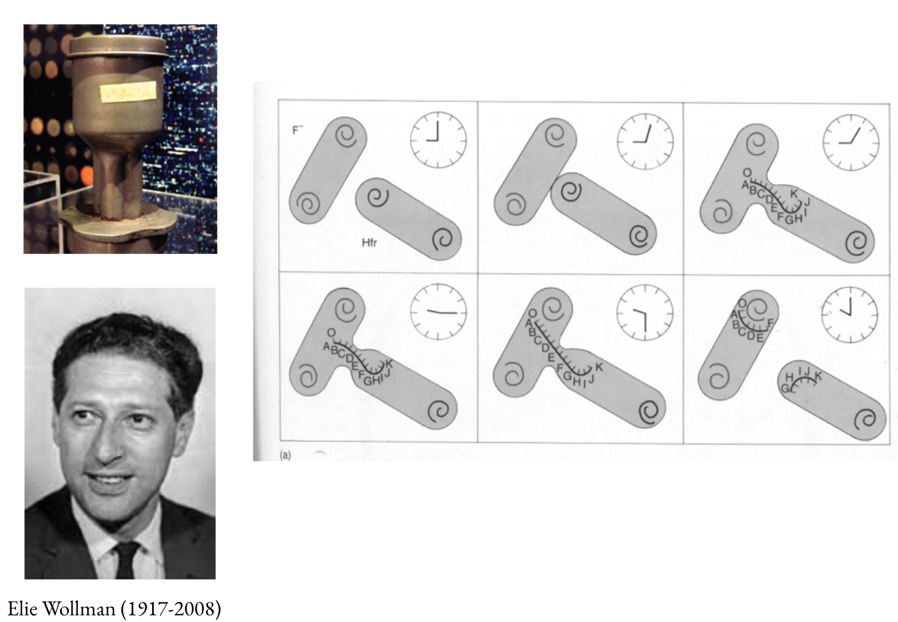

A brief history of modern biology
Contributors
| Author(s) |
|
Charles Darwin
.center[The fabric of biology: 1809 - 1882]
Provisional theory of pangenesis. All sperm, egg, buds consisted of multitude of gemmules given off by “ each separate atom of the organism ”.
Francis Galton
.center[Experimental validation: 1822 - 1911]

Blood transfusion in rabbits produces no evidence to support provisional theory of pangenesis.
Darwin gets pissed
Gregor Johann Mendel
.center[Quantifiable heredity: 1822 - 1884]
.pull-left[
 ]
]
.pull_right[
- Born in Austro-Hungarian Empire (1822)
- Admitted at the Augustinian monastery in Brno (1843)
- Studies in Vienna with Doppler, Ettinghausen, Redtenbacher, Fenzl, and Unger (1851 - 1853)
- Teaches at the Monastery (1853 - 1868)
- Grows 28,000 plants and analyzed seven pairs of traits ]
Mendel gets lucky
.footnote[(From Magner 2002)]
.footnote[(From Gonick Wheelis 1991)]
Perhaps too lucky
.footnote[(From Sturtevant 2001)]
deVreis/Correns/Tschemak
.center[The Rediscovery]
Meanwhile chromosomal theory evolves
.center[
- Species have a constant number of chromosomes
- Equal numbers come from egg and sperm
- Reduction is accomplished by divisions
- Chromosomes are bearers of hereditary material
]
The fly room
.center[
Morgan/Sturtevant/Bridges/Muller
- Chromosomes contain hereditary information
- Genes are linearly distributed along chromosome
- Gene is a unit of information
- Gene can define characteristics such as eye color, wing shape etc.
]
Academic competition!
.footnote[(From Carson 2004)]
But what is the carrier of information?
-
Miescher nucleic acids -
Kossel DNA, RNA, histones -
Levene tetranucleotide theory -
Chargaff parity rules -
Griffith, Avery, MacLeod, McCarty nucleic acid is the transforming factor
The Church of Phage
-
Delbrück, Luria, Hershey replication and genetic structure of viruses -
Lwoff profage and lysogeny -
Lederberg, Hayes bacterial sex, plasmids -
Hershey, Chase DNA = heredity -
Watson …
Delbrück, Luria, Hershey
NP 1969: “ discoveries concerning the replication mechanism and genetic structure of viruses “
Luria Delbrück Experiment

Hershey-Chase experiment
.pull-left[
 ]
]
.pull-right[
 ]
]
Lederberg-Tatum experiment
Genetic recombination in E. coli
Blender again!

DNA
-
Crick, Franklin, Watson, Wilkins the structure of DNA -
Meselson, Stahl semiconservative replication -
Ochoa, Kornberg enzymatic synthesis of nucleic acids -
Holley, Nirenberg, Khorana the code
Crick, Franklin, Watson, Wilkins
DNA is an antiparallel double helix

Meselson, Stahl
DNA replication is semiconservative
Meselson-Stahl experiment
CsCl gradient centrifugation
Gene function
-
Lwoff, Jacob, Monod genetic map and gene regulation -
Beadle, Tatum one gene = one protein -
Pauling, Ingram molecular disease
Lwoff, Jacob, Monod
Lysogeny, prophage, genetic maps, gene regulation
Reverse Transcription, Recombinant Age
-
Temin, Baltimore reverse transcription -
Cohen, Boyer recombinant methodologies -
Berg SV40 -
Maxam, Gilbert, Sanger sequencing is here
Berg experiment
PCR
.pull-left[ ]
.pull-right[ ]
DNA Sequencing is here!
Thank you!
This material is the result of a collaborative work. Thanks to the Galaxy Training Network and all the contributors! Tutorial Content is licensed under
Creative Commons Attribution 4.0 International License.
Tutorial Content is licensed under
Creative Commons Attribution 4.0 International License.